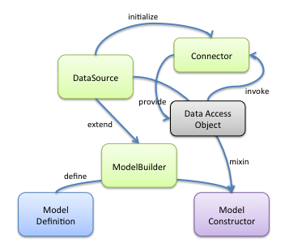

用于导出处理Models的DataSources的方法

模型构建的流程如下：
DataSource对象在Loopback中是一个统一的接口对象。Loopback使用该对象去整合后端系统。它是 模型类数据访问逻辑的工厂。通过DataSource的抽象方便的衔接各种Connector，DataSource为 隔离业务逻辑与数据访问服务提供了必要的抽象。
在loopback-datasource-juggler/lib/dao.js中我们可以看到DataAccessObject的实现。
DataAccessObject.find = function find(query, options, cb) {
// 此处省略n行代码
var near = query && geo.nearFilter(query.where);
// 可以看到在方法实现时提供DataSource的底层connector抽象来隔离不同数据，
// 来带的查询语句差别
var supportsGeo = !!this.getDataSource().connector.buildNearFilter;
// 此处省略n行代码
};
lib\registry.js提供了模型的创建能力:createModel
registry.createModel = function(name, properties, options) {
if (arguments.length === 1 && typeof name === 'object') {
var config = name;
name = config.name;
properties = config.properties;
options = buildModelOptionsFromConfig(config);
assert(typeof name === 'string',
'The model-config property `name` must be a string');
}
options = options || {};
var BaseModel = options.base || options.super;
if (typeof BaseModel === 'string') {
var baseName = BaseModel;
// getModel方法从模型集合中获取已经通过ModelBuilder构建的模型构造函数
BaseModel = this.getModel(BaseModel);
if (BaseModel === undefined) {
if (baseName === 'DataModel') {
console.warn('Model `%s` is extending deprecated `DataModel. ' +
'Use `PeristedModel` instead.', name);
BaseModel = this.PersistedModel;
} else {
console.warn('Model `%s` is extending an unknown model `%s`. ' +
'Using `PersistedModel` as the base.', name, baseName);
}
}
}
BaseModel = BaseModel || this.PersistedModel;
var model = BaseModel.extend(name, properties, options);
// try to attach
try {
this.autoAttachModel(model);
} catch (e) {}
return model;
};